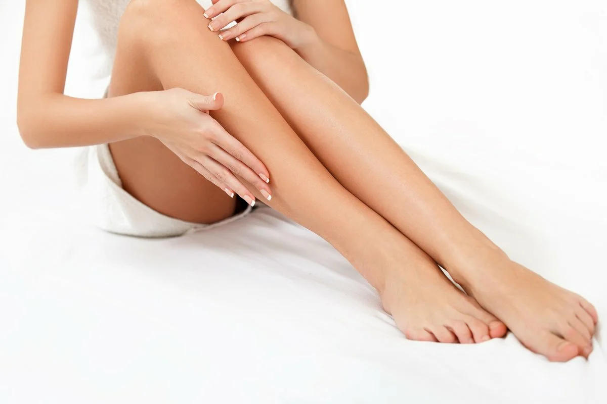

Набор для депиляции воском: лучшее решение для удаления волос в домашних условиях
Нежелательная растительность на теле является большой проблемой для женщин. Существует много способов, позволяющих избавиться от лишних...